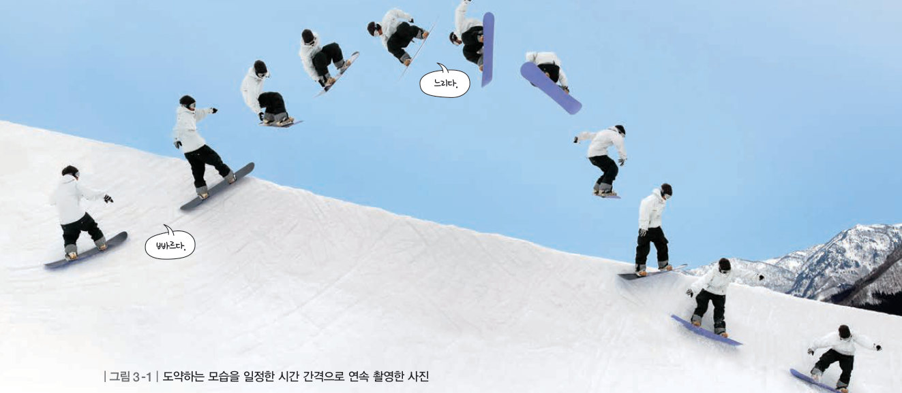
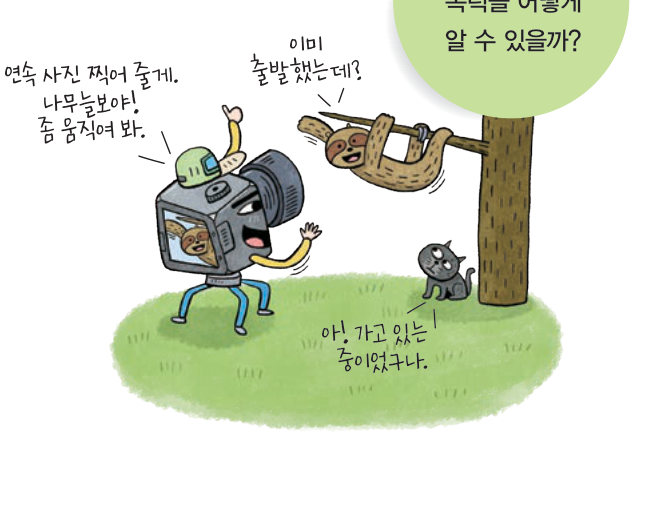
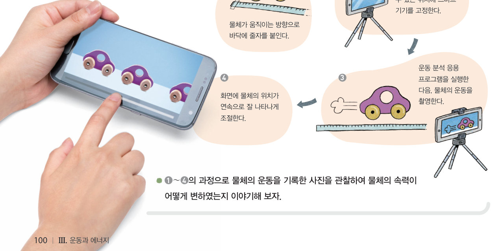

연속 사진을 보고 속력을 어떻게 알 수 있을까? 가상 연속 사진기로 일정한 운동, 빨라지는 운동, 느려지는 운동을 여러 시간 간격으로 찍어 보고, 물체 사이의 간격으로 속력을 비교하고 계산해 보자.
놀이공원에는 재미있는 놀이 기구가 많아. 그중에서도 자이로 드롭은 인기 만점이야. 자이로 드롭이 올라갈 때에는 심장이 두근두근했어. 그러다 높은 곳에서 뚝 떨어지는데, 정말 짜릿했어. 자이로 드롭이 올라갈 때와 떨어질 때의 운동은 어떻게 다를까?
▶ 이미 배운 내용 | 힘은 물체의 속력을 변화시킨다.
🔑 첫 번째 열쇠 자이로 드롭이 올라갈 때의 속력 변화를 알아본다. · 두 번째 열쇠 자이로 드롭이 떨어질 때의 속력 변화를 알아본다.
이 단원과 관련해 이미 알고 있는 것에 표시해 보자.
움직이는 물체를 연속으로 촬영한 사진을 보면 물체가 어떻게 운동하는지 알 수 있다. 특히, 일정한 시간 간격으로 물체를 촬영하면 물체의 빠르기에 대한 정보를 얻을 수 있다.

운동하는 물체를 촬영하면 사진 한 장에 물체가 여러 번 나타난다. 이때 물체 사이의 시간 간격이 일정하므로 물체가 이동한 거리로 속력을 비교할 수 있다. 즉, 그림 3-1과 같이 도약을 하는 사람의 간격이 멀수록 속력이 빠르고, 가까울수록 속력이 느리다. 이때 물체 사이의 거리와 시간 간격을 알면 물체의 속력을 구할 수 있다.
이와 같이 움직이는 물체의 운동을 기록하면 속력을 비교하거나, 속력을 구할 수 있으므로 물체의 운동을 분석할 수 있다. 이외에도 운동을 기록하는 방법에는 다중 섬광 사진, 시간기록계 등이 있다.
속력은 단위 시간 동안의 이동 거리로, 속력(m/s) = 이동 거리(m) ÷ 시간(s)으로 나타낸다.
| (가) | |
| (나) | |
| (다) |
| 평가 기준 | 스스로 평가 |
|---|---|
| 물체의 움직임을 일정한 시간 간격으로 기록하여 속력의 변화를 설명할 수 있다. | |
| 연속 사진에서 이동 거리와 시간 간격으로 속력을 구할 수 있다. |